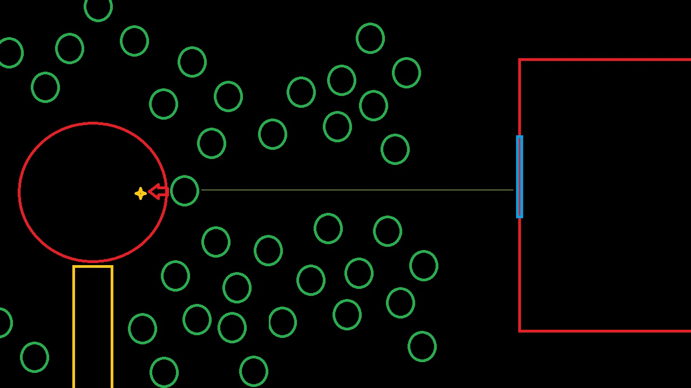

"Aqui el diagrama ayudará mucho. Donde se encontraban solo habían árboles, incluyendo el árbol que cayó el cual ya estaba dañado de antemano, y la llave justo al lado. Me ahorraré de comentar detalles adicionales hasta que lo vea necesario."
"Cuando las pisadas nos guiaron a ese espacio, Mati fue a por la llave como si le sonara de algo."
"Entonces nos contactó Bauti y algo rompió la base del árbol al lado de Mati y cayó antes de que pueda hacer algo."
"A juzgar por el diagrama, es demasiada casualidad de que haya via libre para ese único árbol con respecto al este."
"Hablando de eso, Fox, ¿había algo de ese lado?"
"La mansión."
"¿Osea que se pudo haber tirado algo desde ahi para que choque contra el árbol?"
"La ventana de la habitación donde murió Nora es la central y la que dá al oeste, asi que debió haber sido por ahi."
"Con eso, cuando nos haya visto vulnerables al llegar ahi el culpable pudo haber usado el árbol que habia dañado en caso de que encontráramos la llave."
"Mati dijo que la llave era algo clave. Pensándolo así, quizás era la llave al candado del jardín el cual se había perdido, y si llegaramos a analizar las huellas de esa llave se podría conocer al culpable."
"Pero tirar una llave en un lugar no tan escondido, cuidándolo con una trampa, debe haber sido para recuperarla después ¿no? Por qué querría recuperar la llave de una puerta que ni le convenía y solo estaba cerrada por candado..."
"¿Quizá la llave es más especial de lo que parece? Y si es algo como, una llave maestra?"
"No solo le permitiría abrir y cerrar la habitación que quisiera, sino que podría cerrar la puerta donde estaba Leros sin necesidad de la llave real."
"Eso aclararía cosas de los dos primeros casos, pero parece que no podemos sacar mucho más de aqui. ¿No quieres pasar a la mejor parte?"
"La de culpar a alguien por lo ocurrido en esta isla?"